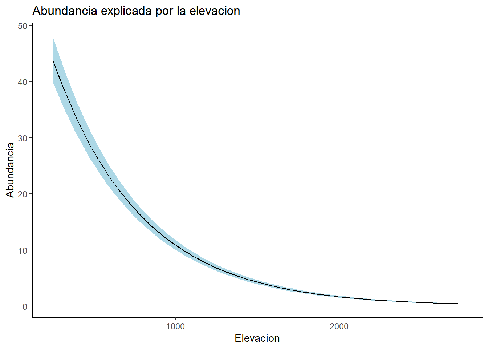

library(tidyverse)
library(unmarked)
library(AICcmodavg)
library(MuMIn)Clase 1: Modelos N-Mixture para estimar abundancia
Introducción a los modelos de abundancia
La abundancia, o el tama√±o poblacional, se refiere al n√∫mero de individuos en un lugar y tiempo determinados. Normalmente, denotamos la abundancia como Nùëñùë° , dondo i representa el lugar (espacio) y t es un √≠ndice para el tiempo. Sin duda, la abundancia debe ser la variable de estado más importante en toda la ecolog√≠a. Esto se ilustra claramente por el hecho de que varios libros influyentes de ecolog√≠a tienen la palabra ‚Äúabundancia‚Äù en su t√≠tulo (por ejemplo, Andrewartha y Birch, 1954; Krebs, 2009).
Cuando contamos animales o plantas, estamos midiendo abundancia: un conteo C es una medida de la abundancia. Al medir la abundancia, existen exactamente dos tipos posibles de errores de medición: (1) podemos pasar por alto o no detectar a un individuo, o (2) podemos contar a un individuo varias veces o incluir otra especie en el conteo (identificación errónea de la especie). El primero representa un error de falso negativo (o de detección) y conduce a un sesgo negativo en el conteo en relación con la abundancia, mientras que los dos últimos representan errores de falso positivo y conducen a un sesgo positivo en el conteo en relación con la abundancia. Estos son los tipos de errores más fundamentales en cualquier medición de abundancia. Hay otras fuentes de errores; por ejemplo, para estudiar el tamaño de una población de adultos territoriales de alguna especie, pero no ser capaz de distinguir juveniles de adultos o individuos territoriales de individuos transitorios. Sin embargo, si realmente no puedes distinguirlos, en cierto sentido esto no es un error, sino simplemente que se está pidiendo demasiado. Necesitamos redefinir nuestro N para abarcar juveniles, adultos, locales y transitorios por igual. Por lo tanto, esto es un problema de cómo defines N.
Modelo N-mixture para abundancia
El modelo N-mixture (Royle, 2004b) es posiblemente el modelo jerárquico (HM) más representativo para estimar la abundancia animal. Similar al modelo de ocupación, el diseño de muestreo tiene una estructura de medidas repetidas, donde se muestrean M sitios en I ocasiones (por ejemplo, conteos puntuales de aves en I mañanas dentro de la misma temporada), y se registran los individuos de una especie. Las observaciones son los conteos y, y el modelo de observación se asume que sigue una distribución binomial, condicionada al tamaño real de la población en el sitio i:
\[y_{ij}| \sim Binomial(N_i,p)\]
Aquí, p representa la probabilidad de detección a nivel individual (en contraste con la probabilidad de detección a nivel de sitio en el modelo de ocupación). Generalmente, se pueden modelar factores que influyen en la detección utilizando modelos lineales generalizados (GLMs) con la función de enlace logit, pero por ahora se omite esta generalidad. Al igual que en el modelo de ocupación, es necesario contar con conteos repetidos (es decir, “mediciones de abundancia”) en al menos algunos sitios para garantizar la identificabilidad de los parámetros del modelo. La variable de estado en este caso es el “tamaño local de la población”, N, y el GLM de Poisson es el marco natural para modelar la variación en esta variable de estado:
\[N_i \sim Poisson(\lambda_i)\]
En casi todos los estudios, existe interés en modelar el efecto de covariables medibles, por lo que se consideran modelos para el logaritmo de λ (es decir, el enlace canónico para GLMs de Poisson):
\[log(\lambda) = \beta_0 + \beta_1x_i\]
donde x es alguna covariable a nivel de sitio. Por supuesto, también se pueden considerar modelos alternativos para la abundancia local, como el Poisson inflado con ceros, el Poisson lognormal o el binomial negativo, que consideran la variación excesiva (o sobredispersión) en la abundancia local en comparación con el modelo de Poisson.
Al igual que el modelo de ocupación, el modelo N-mixture es un tipo de GLM compuesto: tanto el modelo de observación como el de proceso son GLMs estándar, pero están vinculados mediante la estructura de dependencia condicional del modelo jerárquico. Los modelos N-mixture se implementan en el programa PRESENCE (Hines, 2006), en el programa MARK (White y Burnham, 1999), y en el paquete unmarked de R mediante la función pcount.
EL Paquete de R unmarked
El paquete de R unmarked (Fiske y Chandler, 2011) proporciona una plataforma integral para el análisis de muchos de los modelos jerárquicos (HMs) que cubrimos en este curso. Implementa estimaciones basadas en verosimilitud marginal y ofrece funciones de soporte para la organización de datos, resúmenes y análisis gráficos. El paquete fue desarrollado originalmente por Ian Fiske como estudiante de posgrado en la Universidad Estatal de Carolina del Norte, y fue asumido en gran medida por Richard Chandler alrededor del año 2011.
El paquete unmarked ofrece un marco unificado para la manipulación de datos, exploración de datos, ajuste de modelos (mediante máxima verosimilitud), selección de modelos, promediado de modelos, evaluación del ajuste del modelo (Gof, por sus siglas en inglés), predicción, e implementa ideas como bootstrapping, predicción, estimación empírica Bayesiana y otros procedimientos de inferencia y análisis. Los modelos jerárquicos principales disponibles en unmarked son los siguientes:
Modelo de ocupación por sitios de una sola temporada (“estático”) (MacKenzie et al., 2002; Tyre et al., 2003)
Modelo estático de Royle-Nichols (Royle y Nichols, 2003)
Modelo estático de ocupación con falsos positivos (Royle y Link, 2006; Miller et al., 2011)
Modelos estáticos de ocupación penalizada (Hutchinson et al., 2015)
Modelo estático binomial de mezcla N (Royle, 2004b)
Modelo estático multinomial de mezcla N (Royle, 2004a; Dorazio et al., 2005; Langtimm et al., 2011)
Modelo jerárquico estático de muestreo por distancias (Royle et al., 2004)
Versiones de “población abierta” para muchos de los anteriores: 1) Modelo dinámico de ocupación (MacKenzie et al., 2003), 2) Modelo de mezcla multinomial con emigración temporal (Chandler et al., 2011), 3) Muestreo por distancias con emigración temporal, modelo dinámico de N-Mixture (Dail y Madsen, 2011), muestreo por distancias dinámico (Sollmann et al., 2015).
Con frecuencia, los modeladores jerárquicos en formación tienen dificultades para determinar qué tipo de modelo deberían utilizar para abordar un problema específico. Una clave dicotómica simple puede ayudar a guiar al usuario hacia la funcionalidad adecuada de unmarked (Figura 2.1).
 Figura 2.1 Árbol de decisión para los modelos disponibles en el paquete de R unmarked. Una pregunta científica o de manejo (el signo de interrogación en el cuadro superior) sugiere primero un enfoque en abundancia u ocurrencia; en segundo lugar, si el sistema es estático o dinámico; y en tercer lugar, el método de muestreo utilizado. Todos estos factores determinan el modelo apropiado para su estudio.
Figura 2.1 Árbol de decisión para los modelos disponibles en el paquete de R unmarked. Una pregunta científica o de manejo (el signo de interrogación en el cuadro superior) sugiere primero un enfoque en abundancia u ocurrencia; en segundo lugar, si el sistema es estático o dinámico; y en tercer lugar, el método de muestreo utilizado. Todos estos factores determinan el modelo apropiado para su estudio.
Ejercicio
Voluntarios experimentados realizan un recorrido transecto irregular, específico para cada cuadrante, cuya longitud varía entre 1 y 9 km. Cada transecto se recorre tres veces durante la temporada de cría (de mediados de abril a principios de julio) utilizando el método de mapeo de territorios (Bibby et al., 2000). Los cuadrantes situados en áreas altas (por encima de la línea de árboles) se inspeccionan solo dos veces. Los recorridos comienzan al amanecer y duran en promedio cuatro horas (SD = 1 h). Los observadores registran en un mapa la ubicación de cada individuo de cada especie identificada. Posteriormente, los territorios provisionales se determinan en función de la agrupación de observaciones y, para los registros aislados, en función del conocimiento de los tamaños típicos de los territorios de cada especie.
Aquí analizaremos los conteos por cuadrante del número de territorios de carbonero común (Parus major) (y) en el cuadrante i durante el recorrido j en 2013. El conjunto de datos incluye coordenadas del sitio y covariables como elevación (m), cobertura forestal (%), y longitud de la ruta (km), así como covariables observacionales como la fecha (día 1 = 1 de abril) y la duración (min) de cada recorrido.
Los objetivos de nuestro análisis son dos:
Identificar los factores ambientales que afectan la abundancia de carboneros comunes en Suiza.
Estimar el tamaño de la población de carboneros comunes en Suiza en 2013.
Tits <- read.csv("data/Tits.csv")
str(Tits)'data.frame': 263 obs. of 21 variables:
$ X1 : int 25 20 4 12 0 4 12 7 10 5 ...
$ X2 : int 16 10 4 11 1 1 11 10 14 6 ...
$ X3 : int 16 12 1 6 0 4 4 5 4 6 ...
$ siteID : chr "Q001" "Q002" "Q003" "Q004" ...
$ coordx : int 922942 928942 928942 934942 934942 946942 946942 952942 958942 958942 ...
$ coordy : int 63276 79276 103276 95276 111276 95276 111276 119276 111276 127276 ...
$ AQ : int 1 2 3 3 4 5 6 7 9 10 ...
$ AQ.coordx: int 920442 930942 930942 930942 930942 950942 950942 950942 960942 960942 ...
$ AQ.coordy: int 170224 190724 210724 210724 220724 210724 220724 230724 220724 240724 ...
$ elev : int 450 450 1050 950 1150 550 750 650 550 550 ...
$ rlength : num 6.4 5.5 4.3 4.5 5.4 3.6 3.9 6.1 5.8 4.5 ...
$ forest : int 3 21 32 9 35 2 6 60 5 13 ...
$ time.1 : int 1 1 1 1 1 1 1 1 1 1 ...
$ time.2 : int 2 2 2 2 2 2 2 2 2 2 ...
$ time.3 : int 3 3 3 3 3 3 3 3 3 3 ...
$ date.1 : int 18 13 26 13 24 31 14 37 18 29 ...
$ date.2 : int 41 49 58 35 45 44 45 57 41 58 ...
$ date.3 : int 63 62 75 63 66 68 66 73 56 68 ...
$ dur.1 : int 195 201 210 175 235 120 195 210 185 220 ...
$ dur.2 : int 220 215 210 175 170 135 255 210 205 215 ...
$ dur.3 : int 230 190 210 165 220 120 165 180 170 225 ...Seleccionar variables necesarias
Tits <- Tits %>%
select(X1, X2, X3,
elev, forest,
time.1, time.2, time.3,
date.1, date.2, date.3,
dur.1, dur.2, dur.3)
head(Tits) X1 X2 X3 elev forest time.1 time.2 time.3 date.1 date.2 date.3 dur.1 dur.2
1 25 16 16 450 3 1 2 3 18 41 63 195 220
2 20 10 12 450 21 1 2 3 13 49 62 201 215
3 4 4 1 1050 32 1 2 3 26 58 75 210 210
4 12 11 6 950 9 1 2 3 13 35 63 175 175
5 0 1 0 1150 35 1 2 3 24 45 66 235 170
6 4 1 4 550 2 1 2 3 31 44 68 120 135
dur.3
1 230
2 190
3 210
4 165
5 220
6 120y <- Tits[,c("X1", "X2", "X3")]
SiteVar <- Tits[,c("elev", "forest")]
ObsVar <- list(Time = Tits[,c("time.1", "time.2", "time.3")],
Date = Tits[,c("date.1", "date.2", "date.3")],
Dur = Tits[,c("dur.1", "dur.2", "dur.3")])Tits_umf <- unmarkedFramePCount(y = y, siteCovs = SiteVar,
obsCovs= ObsVar )
summary(Tits_umf)unmarkedFrame Object
263 sites
Maximum number of observations per site: 3
Mean number of observations per site: 2.83
Sites with at least one detection: 191
Tabulation of y observations:
0 1 2 3 4 5 6 7 8 9 10 11 12 13 14 15
215 45 32 33 42 34 37 34 26 24 24 20 24 23 19 18
16 17 18 19 20 21 22 23 24 25 26 27 28 29 30 31
16 8 12 8 4 6 3 5 7 5 2 2 1 1 2 2
32 33 34 35 38 41 <NA>
1 2 1 3 1 1 46
Site-level covariates:
elev forest
Min. : 250 Min. : 0.00
1st Qu.: 550 1st Qu.: 8.50
Median :1150 Median :33.00
Mean :1190 Mean :34.88
3rd Qu.:1850 3rd Qu.:56.50
Max. :2750 Max. :99.00
Observation-level covariates:
Time Date Dur
Min. :1 Min. : 13.00 Min. : 85.0
1st Qu.:1 1st Qu.: 35.00 1st Qu.:195.0
Median :2 Median : 56.00 Median :231.0
Mean :2 Mean : 54.59 Mean :232.3
3rd Qu.:3 3rd Qu.: 72.50 3rd Qu.:270.0
Max. :3 Max. :118.00 Max. :420.0
NA's :46 NA's :46 ModelDet0 <- pcount(~1 ~1, Tits_umf ) ##Null model
ModelDet1 <- pcount(~Date ~1, Tits_umf )
ModelDet2 <- pcount(~Time ~1, Tits_umf )
ModelDet3 <- pcount(~Dur ~1, Tits_umf )Seleccion de modelo de deteccion
DetModels <- list(ModelDet0, ModelDet1, ModelDet2, ModelDet3)
DetNames <- c("Nulo", "Fecha", "Hora", "Dur")
aictab(DetModels, DetNames, sort = TRUE)
Model selection based on AICc:
K AICc Delta_AICc AICcWt Cum.Wt LL
Fecha 3 5133.62 0.00 1 1 -2563.77
Hora 3 5722.78 589.16 0 1 -2858.34
Dur 3 5993.25 859.63 0 1 -2993.58
Nulo 2 6012.56 878.93 0 1 -3004.25ModelAbun0 <- pcount(~Date ~ 1, Tits_umf)
ModelAbun1 <- pcount(~Date ~ elev, Tits_umf)
ModelAbun2 <- pcount(~Date ~ forest, Tits_umf)
ModelAbun3 <- pcount(~Date ~ elev + forest, Tits_umf)AbunModels <- list(ModelAbun0, ModelAbun1, ModelAbun2, ModelAbun3)
AbunNames <- c("Nulo", "elev", "forest", "elev + forest")
aictab(AbunModels, AbunNames, sort = TRUE)
Model selection based on AICc:
K AICc Delta_AICc AICcWt Cum.Wt LL
elev + forest 5 4012.77 0.00 1 1 -2001.27
elev 4 4972.13 959.36 0 1 -2481.99
Nulo 3 5133.62 1120.86 0 1 -2563.77
forest 4 5135.26 1122.49 0 1 -2563.55summary(ModelAbun3)
Call:
pcount(formula = ~Date ~ elev + forest, data = Tits_umf)
Abundance (log-scale):
Estimate SE z P(>|z|)
(Intercept) 4.05815 5.52e-02 73.46 0.00e+00
elev -0.00186 3.19e-05 -58.34 0.00e+00
forest 0.00540 7.22e-04 7.48 7.72e-14
Detection (logit-scale):
Estimate SE z P(>|z|)
(Intercept) 0.8186 0.12576 6.51 7.54e-11
Date -0.0183 0.00133 -13.73 6.97e-43
AIC: 4012.535
Number of sites: 263
optim convergence code: 0
optim iterations: 164
Bootstrap iterations: 0 confint(ModelAbun3, type = "state", level = 0.95) 0.025 0.975
lam(Int) 3.949865692 4.166426167
lam(elev) -0.001921411 -0.001796500
lam(forest) 0.003981345 0.006811154fitstats <- function(Mod_global2) {
observed <- getY(Mod_global2@data)
expected <- fitted(Mod_global2)
resids <- residuals(Mod_global2)
sse <- sum(resids^2,na.rm=TRUE)
chisq <- sum((observed - expected)^2 / expected,na.rm=TRUE)
freeTuke <- sum((sqrt(observed) - sqrt(expected))^2,na.rm=TRUE)
out <- c(SSE=sse, Chisq=chisq, freemanTukey=freeTuke)
return(out)
}
(pb <- parboot(ModelAbun3, fitstats, nsim=100, report=1))
Call:
parboot(object = ModelAbun3, statistic = fitstats, nsim = 100, report = 1)
Parametric Bootstrap Statistics:
t0 mean(t0 - t_B) StdDev(t0 - t_B) Pr(t_B > t0)
SSE 26345 21146 421.0 0
Chisq 3515 2767 44.8 0
freemanTukey 910 680 13.0 0
t_B quantiles:
0% 2.5% 25% 50% 75% 97.5% 100%
SSE 3956 4408 4974 5240 5482 5975 6115
Chisq 626 666 717 750 774 833 859
freemanTukey 193 208 219 231 239 253 269
t0 = Original statistic computed from data
t_B = Vector of bootstrap samplescHat_pb <- pb@t0[2] / mean(pb@t.star[,2])
MigGOF <- Nmix.gof.test(ModelAbun3, nsim = 100, report = 3)
Elev <- data.frame(elev = seq(min(Tits$elev, na.rm = TRUE), max(Tits$elev, na.rm = TRUE), length.out = 100),
forest = mean(Tits$forest, na.rm = TRUE))
Forest <- data.frame(forest = seq(min(Tits$forest, na.rm = TRUE), max(Tits$forest, na.rm = TRUE), length.out = 100),
elev = mean(Tits$elev, na.rm = TRUE))Elev_pre <- predict(ModelAbun3, newdata= Elev, appendData = TRUE, type = "state")
Forest_pre <- predict(ModelAbun3, newdata= Forest, appendData = TRUE, type = "state")ggplot(data= Elev_pre, aes(x= elev, y= Predicted))+
geom_ribbon(aes(ymin= lower,
ymax= upper), fill = "lightblue") +
geom_line(color= "black") +
labs(x = "Elevacion",
y = "Abundancia")+
ggtitle("Abundancia explicada por la elevacion") +
theme_classic()
ggplot(data= Forest_pre, aes(x= forest, y= Predicted))+
geom_ribbon(aes(ymin= lower,
ymax= upper), fill = "lightblue") +
geom_line(color= "black") +
labs(x = "% Bosque",
y = "Abundancia")+
ggtitle("Abundancia explicada por el % bosque") +
theme_classic()